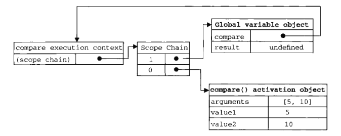
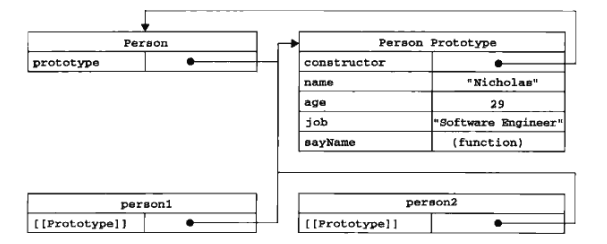
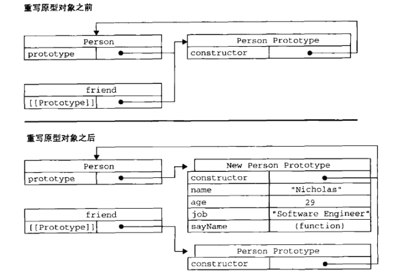
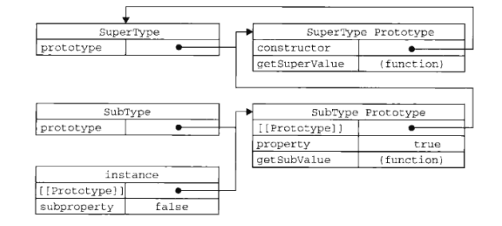

本文主要介绍JavaScript的发展、组成，在Http中的使用，基础语法，变量、执行环境、内存等内容
JavaScript简介
经历
- 由网景公司研发的，在网络带宽很低的年代，用于在浏览器端对表单的数据进行验证，而降低带宽而发明的
- 由于JaScript在浏览器的成功，微软也在IE中增加了JScript的实现。
- 以JavaScript1.1为版本的标准化
结构
- 核心：ECMAScript
语言基础：- 语法
- 类型
- 语句
- 关键字
- 保留字
- 操作符
- 对象
文档对象模型：DOM
就是对XML解析的那个DOM浏览器对象模型：BOM
- 弹出新浏览器窗口的功能
- 移动、缩放和关闭浏览器的功能
- 提供浏览器详细信息的navigator对象
- 提供浏览器所加载页面的详细信息的location对象
- 提供用户显示器分辨率信息的screen对象
- 对cookies的支持
- XMLHttpRequest这样的自定义对象
在HTTP中的使用
- script元素
- async: 表示立即下载脚本，只对外部脚本文件有效
- charset：表示src属性指定的代码的字符集
- defer：表示脚本可以延迟到文件完全被解析和显示之后再执行，外部有效
- src
- type：text/javacript
标签的位置
按惯例，script元素都应该放在页面的head元素中，但这样意味着必须等到全部的JS代码都被下载、分析执行完成后，才能展示页面，导致页面加载的延迟。为此，一般把全部JS放在boday元素中页面内容的后面延迟脚本
有时会将script放在head中，而用derfer=”defer”属性，这样告诉浏览器立即下载，但延迟执行异步脚本
async 目的是不让页面等待两个脚本的下载和执行，从而异步加载页面其他内容。书中建议，异步脚本不要在加载期间修改DOM
基本类型
- typeof
作为一种动态语言，JS需要有一种手段来检测数据类型：typeof操作符（在C/C++中也有）
返回的类型包括：
“undefined”
“boolean”
“string”
“number”
“object”
“function”：这似乎意味着函数并不是对象
undefined与Null
有一段比较有趣：从类型上看，JS有一种Null类型，而”undefined”其实是从Null派生的.而执行typeof(Null对象)结果是object。
声明而未初始化类型是”undefined”，声明对象后，直接赋值”Null”是告诉赋了个空值对象
number
JS也存在float禁止直接 == 的比较
Infinity:Number.MIN_VALUE:一般为5e-324, Number.MAX_VALUE:1.79e+308，超过这些范围则为Infinity 或者-Infinity
NaN:Not a Number
任意数/0 = NaN， NaN不与任意数相等，包括其自身数值转换
Number()
parseInt()
parseFloat()函数
toFixed(): 按参数的小数位返回数值的字符串表示var num=10
alert(num.toFixed(2)) // “10.00”
toExponential(1)： 同上，不过是以e表示的
toPrecision(1): 同上，参数表示的是数字的位数
字符串
字符串特点
ECMAScprit中字符串是不可变的。字符串一旦创建，值就不能改变。要改变某个变量保存的字符串，首先要销毁原来的字符串。
这一点与python一致转换为字符串
几乎每个值都有toStrig()方法，这个与Java类似
或者Stirng(变量)的方式在转换函数
charAt(1) ： 在某个位置上的字符var str = “hello world”
alert(str.CharAt(1)) // e
concat(): 拼接,参数个数不限，不修改原值
alert(str.concat(“!”, “thanks”))
切片：
slice(起始，结束)， substring(起始，结束)，substr(起始，个数)
str.slice(3, -1)
位置:
indexOf()和lastIndexOf() 与C++中的find（）与rfind（）类似
str.indexOf(“or”)
删除前后空格：
trim()
str.trim()
大小写转换：
toUpperCase()/toLowerCase()
str.toUpperCase()
Object类型
这个Object与Java的Object类似，就是说Object类型是所有其他实例的基础。
Constructor():构造函数
hasOwnProperty(属性名)，建材给定的属性在爱当前实例中。
isPrototypeOf(object)，传入的对象是否是另一个对象的原型
propertyIsEnumerable(属性名)，检查属性是否可以通过for-in来枚举
toLocaleString()返回对象的字符串表示
toString()：同上
valueOf()：返回字符串、数值或者布尔值表示。
函数
操作符
++ 与 – 类似与 C/
+操作符，就是正号，需要注意的是对非数值使用，该操作符回想Number()转型函数一样对这个数进行转换。
== 与 === :早期的ECMAScript版本中的相等和不相等–先转换再比较。===则仅比较而不转换。
语句
with 语句：with语句的作用是将代码的作用域设置到一个特定对象中。这个有点像python的with语句。严格模式下不允许使用with语句，被认为是语法错误
理解参数
ECMAScript中的所有参数传递都是值，不可能通过引用传递参数。
ECMAScript 函数并不介意传递进来多少个参数，也不在乎传入的参数是什么类型。
即使定义的函数只接收两个参数，在调用这个函数时，也未必一定要传递2个参数。
原因是ECMAScript中的参数在内部是用一个数组来表示。函数接收到的始终都是这个数组，而并不关心数组中包含哪些参数。在函数体内可以通过arguments对象来访问这个参数数组，从而获得传递给函数的每一个参数。1
2
3
4
5
6
7
8
9
10function doAdd(){
if (arguments.length == 1){
return arguments[0]+10;
} else if (arguments.length == 2){
return argument[0]+argument[1];
}
}
let a = doAdd(10);
let b = doAdd(10,20);关于arguments有一点比较有趣，它的值永远与对应命名参数的值保持同步。
但它们访问的内存空间是独立的，但它们的值会同步。但这种同步也是单向的，修改命名参数不会改变arguments中的对应值，而修改arguments会改变命名参数的。
变量
变量
基本类型与引用类型
ECMAScript变量可能包含2种不同数据类型的值：基本类型值和引用类型值。
基本类型包括5种：Null,Undefined,Number,String,Boolean
引用类型就是最有一种Object类型。
多数语言中String类型都是对象：如C++/Java，因而是引用类型，但JavaScript并不是。基本类型在内存中都是按值来存储【这一点跟python还有一点区别，python的小整数都是相同的内存】
而引用类型跟C++/C的思路一直，变量名仅保留其指针，对变量名的复制仅仅是浅copy，内存中并不会创建一份新的引用类型。传递参数
对于引用类型的传参，是挺有意思的，首先形参是重新定义了一个对象，传递的值是引用类型值的指针。若使用这个对象直接修改属性，则函数外的属性也会修改。但如果这个形参对象重新指向别的对象，则外边的对象便不会修改了,就是这个指针已经指向别处了。1
2
3
4
5
6
7
8function setName(obj){
obj.name= "li"
obj = new Object();
obj.name = "wang"
}
var person = new Object()
setName(person); // person.name = "li"检测类型
对应基本类型用typeOf()进行对象的检测
对于引用类型，使用instanceof来判断：这个与C++类似
执行环境及作用域
基础概念

所谓的执行环境，其实就是函数的环境一层一层的压栈，然后出栈的过程，对于作用域的查询也与C语言类似：先找局部、然后上一层的栈..直到全局变量。
但与之不同的是，每一个执行环境都有一个与其关联的变量对象（variable object），环境中定义的所有变量和函数都保存在这个对象中。
当代码在一个环境中执行时，会创建变量对象的一个作用域链（scope chain）。作用域链的作用，是保证对执行环境有权访问的所有变量合函数的有序访问。这个作用域链用来保存各个执行环境的变量对象。
其他
需要注意一点：JavaScript中没有块级作用域：即不能像C/C++通过{}来设置一个作用域.
1
2
3
4for (var i=0; i<10; i++){
doSomething(i);
}
alert(i); // i=10还有一个比较坑
在非严格模式下如果在函数内定义一个变量没有var标志,那么这个定义的变量是全局变量.
垃圾收集
标记清除
标记清除用于局部变量的清除引用计数
与python类似.也存在严重的循环引用问题。
但python中有隔代清理机制，没见JavaScript有介绍。注意：
对于不同的对象，将变量直接赋null。这个在有垃圾收集机制的语言中通用。如Java\Pthon。即使在C++/C中，也建议将delete后的指针赋null，防止野指针。
引用类型
Object类型
两种构造构造方法：
new Object方法：
1
2
3var person = new Object();
person.name = "sun"
person.age = 31对象字面量：
1
2
3
4var person = {
name : "sun",
age: 29
}
第一种形式就是C++的struct，第二种形式就是python的字典
访问
访问上也是沿用struct或者字典类型：
person.name
person[“name”]注意：
起始对象字面量种的变量如name，age都是string。
Array类型
定义
同Object，Array也有2种定义方法：即对象定义方法与对象字面量，前一种类似与c++的vector，后一种类似与python的列表[]- 对象定义方法
var colors = new Array(); - 对象字面量方法
var colors = []
- 对象定义方法
操作
Javasript为它的Array定义了好多的函数- 检测数组
1
2if (value instanceof Array){}
if (Array.isArray(value)){}- 转换
1
2var colors = ["red", "blue", "green"]
colors.toString()栈方法
push与pop 方法队列方法
shift与unshift
shift是取并移除队列头部的元素
unshift是往头部塞数据顺序
1
2
3
4
5
6
7
8
9
10var values = [1, 2, 4, 5]
values.reverse() //values的顺序是倒序了，这个并没用python的好用
values.sort() // 这个是个坑，竟然是按照字符串来测序。
// 好在这个坑，可以通过传入函数的方式来填
function compare(v1, v2){
return v1-v2;
}
values.sort(compare)切片
1
2
3
4
5
6
7slice()
var values = [1, 2, 4, 5]
values.slice(1) // 取的是1,-1
values.slice(1,3) //也是左开右闭的区
splice() // 这个太强悍了，是一个基于切片的删除、插入方法
var colors = ["red", "green", "blue"]完全体下： removed = colors.splice(1,1,”red”,”yellow”)
意思是，从1个位置上，删除1个，并插入”red”与”yellow”查找
indedOf（）/lastIndexOf()
竟然不叫find()与rfind（），真另类。迭代方法
这个挺牛逼，包含map
| 函数 | 说明 |
|---|---|
| every() | 对每一项运行函数，每一项皆true，结果才true |
| some() | 对每一项运行函数，有一项true，则结果true |
| forEach() | 遍历每个对象，运行函数 |
| filter() | 通python |
| map() | 通python |
reduce方法
1
2
3
4var values = [1, 2, 3, 4]
var sum = values.reduce(function(pre, cur, index, array){
return prev + cur;
})
Date类型
创建
当前时间：
var now = new Date()这样返回的是当前时间的毫秒数， 可以用来计算运算的时间
var start = Date.now()构建时间
需要在Date（）中传入一个表示该日期的毫秒数（自1970-1-1），类型位是int
但我们要想自己算毫秒数，人会疯掉，于是有了两个函数，用来将其他类型的转换成毫秒数Date.parse():将本地的string类型转换成毫秒数。
Date.UTC():将以年月日、时分秒等数值转换成毫秒数。于是有：
1
2var date1 = new Date(Date.parse("2018-7-30"))
var date2 = new Date(Date.UTC(2018, 7, 30))注意这里有个小坑： Date中的月，都是从0开始算的，所以1月是0, 8月是7.
转换
字符串
- toString（） // 可能是伦敦时间，格式也也是CST的
toLocalString() // 北京时间： 年月日+时分秒 “2017-7-30 00:00:00”
toDateString() // 星期、月、日、年
toLocalDateString() // “2017-7-30”
toTimeString() // 时分秒 CST等等
- toLocalTimeString() // “00:00:00”
总之，用Locale的更好看一些
数值
- getTime() // 返回表示日期的毫秒数
操作
- getFullYear() //年
- getMonth() // 月，并以0为起始
- getDate() // 日:竟然是Date而不是Day 1-31
- getDay() // 星期几： 也以0位开始，Day竟然是周几，吐槽一下
- getHours() // 时：0-23
- getMinutes() // 分：0-59
- getSeconds() // 秒：0-59
上述操作，有get也有set，还有个毫秒。
ReqExp类型
JS的正则表达式与别的语言的大约类似
var expression = / pattern / flags
flags有： g 全局模式， i 不区分大小写， m 多行
使用
字面量形式
匹配第一个bat或者cat，且不区分大小写
var pattern1 = /[bc]at/i匹配所有以at结尾的3个字符的组合，不区分大小写
var pattern2 = /.at/gi同样模式中使用元字符需要转义： 如{[( \ ^ $ ? * . +)]}
还有一种构造函数的形式(起始就是类的形式)
var pattern1 = new RegExp(“[bc]at”, “i”)
在这里边，所有的元字符都需要双重转义示例
1 | var text = "mom and dad and baby"; |
实例属性或方法
var pattern3 = /[bc]]at/i
pattern3.lastIndex // 0 表示开始搜索下一个匹配项的字符位置。
pattern3.source // “[bc]at” 正则表达式的字符串表示
pattern3.exec()
pattern3.test(字符串) // 与模式匹配的情况下返回true，否则返回false
pattern3.toString() // 返回增则表达式的字面量
pattern3.toLoacaleString()
构造函数属性（类的属性）
| 长属性名 | 短属性名 | 说明 |
|---|---|---|
| input | $_ | 最近一次要匹配的字符串 |
| lastMatch | $& | 最近一次的匹配项 |
| lastParen | $+ | 最近一次的匹配捕获组 |
| leftContext | $` | 匹配项之前的文本 |
| rightContext | $’ | 匹配项之后的文本` |
| multiline | $* | 是否是多行 |
实例：
1 | var text = "this has been a short summer" |
Function类型
特意将函数拉到最后，因为后边的2章：面向对象、函数表达式其实都是对函数的深入理解。
简介
函数起始也是对象（这与python一样），每个函数都是Function类型的实例。而且Function与其他引用类型一样，具有属性和方法。由于函数是对象，因此函数名实际上也是一个指向函数对象的指针，不会与某个函数绑定。
函数声明与函数表达式
// 函数表达式
1 | var fun1 = function(num){ |
// 函数声明
1 | function fun2(num){ |
解析器在向执行环境中加载数据时，对函数表达式与函数声明并非一视同仁。解析器会率先读取函数声明，并使其在执行任何代码之前可用（有点类似于静态语言的编译），至于函数表达式，则必须等到解析器之行到它所在的代码行，才会真正被解释执行。
函数的内部属性
函数内部，有2个特殊的对象：arguments和this。
arguments
前边介绍过，它是一个类数组对象，包含着传入函数的所有参数。但它还有一个callee属性，该属性是一个指针，指向拥有这个对象的函数名。看阶乘函数
1
2
3
4
5
6
7function factorial(num){
if (num <= 1){
return 1;
} else {
return num * factoril(num-1)
}
}在函数有名字，而且名字以后也不会变的情况下，这样定义没有问题，但这样这个函数的执行与函数名factorial紧耦合在一起了，如果将：
let factorial2 = factorial
let factorial = null
再运行factorial2，会报错。python也存在这样的问题。
如此可以这样改写：1
2
3
4
5
6
7function factorial(num){
if (num <= 1){
return 1;
} else{
return num * arguments.callee(num-1)
}
}这样就不会有问题了。
this
this与Java/C++类似，this引用的是函数据以之行的环境对象。按之前的写法叫运行环境的变量对象，也就是作用域对象。
函数属性和方法
每个函数都包含2个属性：length与prototype，最好戏是这个prototype.
length
length属性表示函数接收的命名参数的个数1
2
3
4function sum(n1, n2){
return n1+n2;
}
alert(sum.length)prototype
prototype放在下一章来写，在下一章会对 构造函数（类）， 实例， prototype进行详述。apply()/call（）
这两个方法都是在特定的作用域中调用函数。他们的第一个参数都是作用域对象，差异是apply()的第二个参数是数组，call第二个对象是元素// 作用域没变的情况下，就是传参或者调用函数，还不如直接调用省事
1
2
3
4
5
6
7
8
9
10
11
12
13
14function sum(a,b){
return a + b;
}
fuction callSum(a, b){
return sum.call(this, a, b)
}
let color = "red"
var o = {color:"blue"}
function sayColor(){
alert(this.color)
}
sayColor(); // red
sayColor(this); // red
sayColor(o); // bluebind()
与apply类似，也是一种用来扩展作用域的方式，只是调用上不一样var sayColor2 = sayColor.bind(o)
sayColor2() // blue
内置对象
包括有：Object、Array等都是内置对象，下边还有2个：Global与Math
Global
实际上没有全局变量与全局函数，所有在全局作用域中定义的属性和函数都是Global对象的属性，如isNaN（），isFinite（），parseInt（），parseFloat（）等
encodeURI与encodeURIComponent()
主要用于对URI进行编码，区别在于encodeURI不会对本身属于URI的特殊字符进行编码例如: # ? /,而encodeURIComponent()会对任何非标准字符进行编码。
在实践中常见的是对查询字符串参数，而不是对基础URI编码，故使用后者会多一些decodeURI与decodeURIComponent()解码
只能对应自己的编码
在浏览器中，将Global对象作为window对象的一部分加以实现。
Math对象
| 属性 | 说明 |
|---|---|
| Math.E | e |
| Math.LN10 | ln10 |
| Math.LN2 | ln2 |
| Math.LOG2E | log 2底e |
| Math.LOG10E | log 10底e |
| Math.PI | pi |
| Math.SQRT2 | 根2 |
| 方法 | 说明 |
|---|---|
| Math.min() | 最小值 |
| max（） | 最大值 |
| ceil() | 向上舍入 |
| floor() | 向下舍入 |
| round() | 标志舍入 |
| random() | 0-1间的随机数 |
| abs(num) | 绝对值 |
| exp(num) | e的num次幂 |
| log(num) | num的自然对数 |
| pow(num,power) | num的power次幂 |
| sqrt(num) | 平方根 |
| 三角函数.. |
面向对象
在这一里，主要对几个重要的技术进行说明，并不想对这一章进行整体的展开。这几个重要概念是：对象、构造函数（类）、原型、基于原型及构造函数的继承。
对象
定义
- 定义：无序属性的集合，其属性可以包含基本值、对象或者函数。
- 可以把es对象想象成散列表：无非就是一组名值对，其中值可以是数据与函数。
对与这个，首先我们在C++/Java里的对象，就是将他们的函数名当作的键。
其次也符合对python中的字典类型的认识，即可以当作struct来使用。属性类型
es5中有两种属性：数据属性和访问器属性.这些属性是只在内部才可用的特性。数据属性
| 属性 | 说明 |
|---|---|
| Configurable | 表示能否通过delete删除属性从而重新定义属性 |
| Enumerable | 表示能否通过for-in循环返回属性 |
| Writable | 表示能否修改属性的值 |
| value | 包含这个属性的数据值 |
示例：
1 | var person = {} |
这种类似于const
访问器属性
| 属性 | 说明 |
|---|---|
| Configurable | 同上 |
| Enumerable | 同上 |
| Get | 在读取属性时调用的函数 |
| Set | 在写入属性时调用的函数 |
示例：
1 | var book = { |
创建对象
工厂模式
示例
1 | fuction createPerson(name, age, job){ |
说明
工厂模式解决了创建多个相似对象的问题，但却没有解决对象识别的问题（即知道一个对象的类型）
构造函数（类）
实例
1 | function Person(name, age, job){ |
说明
- 这种构造函数的方法跟类是一致的
- person1和person2分别保存着Person的一个不同的实例，这两个对象都有一个constructor（构造函数）属性，该属性指向Person
1 | alert(person1.constructor == Person) //true |
- 对象的constructor属性最初是用来标识对象类型的。但是，检测对象类型，还是用instanceof操作符更可靠一些。
1 | alert(person1 instance of Person) // true |
问题
- 构造函数的主要问题，就是每个方法都要在每个实例上重新创建一遍。如person1和person2都有一个sayName()的方法，但那个方法不是同一个Function实例。
原型
实例
1 | function Person(){ |
说明
原型对象
原型对象类似于静态变量，类唯一。

上图很好的说明了实例、构造函数、原型之间的关系。
函数与原型之间的关系：每个新函数都有一个prototype属性，这个属性指向原型对象。默认情况下，所有原型对象会也有一个constructor属性，这个属性指向所原型所在的函数。
实例与原型
新实例的内部包含一个指针，指向构造函数的原型对象。
1 | alert(Object.getPrototypeOf(person1) == Person.prototype); // true |
hasOwnProperty()可以检测一个属性是存在于实例，还是存在于原型中。只在属性存在于对象实例中，才会返回true
in:in操作符可以单独使用，在操作符会在通过对象能够访问给定属性时，返回true，无论是在实例还是在原型中。
若实例中添加一个属性，与原型中的属性同名，则该属性屏蔽原型中的属性.[这里就有一种类似于作用域东西，先搜索实例，没有找到就搜索原型]
这个新属性只会阻止访问原型中的属性，并不会修改那个属性，即使设置位null，也只会在实例中设置这个属性，而不会恢复其指向原型的连接。但delete操作符，则可以完全删除实例属性，从而恢复原型属性.
1 | person1.name = "feng" |
更简单的原型语法
前面每添加一个属性，都要敲一遍Person.prototype，更常见的做法是用一个对象字面量来重写整个原型对象。
1 | function Person(){ |
这样存在一个问题，原来prototype中的constructor指向Person构造函数，但重新赋值后,constructor属性不再指向Person了。可以通过制定constructor: Person来指定。但这样指定的，也可通过in来访问到，最好的方式是：
1 | Object.defineProperty(Person.prototype, "constructor", { |
原型动态修改
1 | function Person(){ |
这是因为friend所中的原型指针指向的是赋值之前的原型，而不是之后的。

原型对象的问题
原型中所有的属性是被所有实例共享的，是静态的，所以修改一个，全部都会修改。故适合函数的复用。
原型与构造函数的组合使用
实例1
即普通属性放到构造函数中，将函数放到原型中。
1 | function Person(name, age, job){ |
实例2
1 | function Person(name, age, job){ |
继承
原型链继承
实例
1 | function SuperType(){ |
说明
这种方法起始就是在设置子类的原型时指向父类的一个实例，这与用字面量来定义原型类似。他们之间的关系如下：

存在问题
1 | funtion SuperType(){ |
说明
通过使用call（）方法，就是在新创建SubType实例时，调用了SuperType构造函数，这样就会在SubType对象上初始化了所有SuperType（）函数的属性。
问题
问题依旧明确，函数没有办法复用。
组合
实例
1 | function SuperType(name){ |
说明
属性通过构造函数来继承，避免了由于原型链继承带来的静态问题。
函数通过原型链继承，避免了构造函数继承带来的函数复用问题。
而且通过instanceof合isPrototypeOf()也能识别基于组合继承的对象。
函数表达式
递归
普通递归
1 | function factorial(num){ |
问题
1 | var another = factorial; |
修改
函数内的arguments有一个 callee属性，指向正在之行函数的指针。
1 | function factorial(num){ |
闭包
作用域链
当某个函数第一次调用时，会创建一个执行环境（execution context）及相应的作用域链，并把作用域链赋值给execution context一个内部特殊属性（[Scope]）。然后，使用this, arguments和其它命名参数的值来初始化函数的活动对象(activity object)。
1 | funtion compare(v1, v2){ |
闭包是一个函数内部创建另一个函数，内部函数引用外部函数的变量。
这样内部函数的作用域链中，就含有外部函数的作用域（活动对象）
闭包与变量
1 | function createFuntions(){ |
内层函数直接访问外层函数的变量，而这个变量最后都变成了10,故所有的函数都返回10
1 | function createFuntions(){ |
关于this
this对象是在运行时，基于函数的执行环境绑定的.当函数作为某个对象的方法调用时，this等于那个对象。不过匿名函数的执行环境具有全局性。
私有变量
私有变量起始跟类的私有成员类似。
1 | function MyObject(){ |
构造函数内部定义的的私有变量和函数不能在外部访问，但可以通过公有的函数进行访问。
可以认为有this的为公有，没有的就是私有。